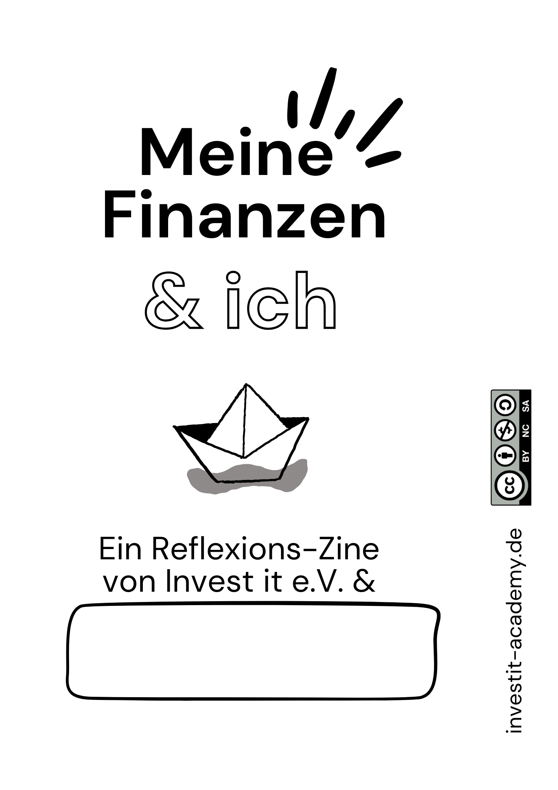
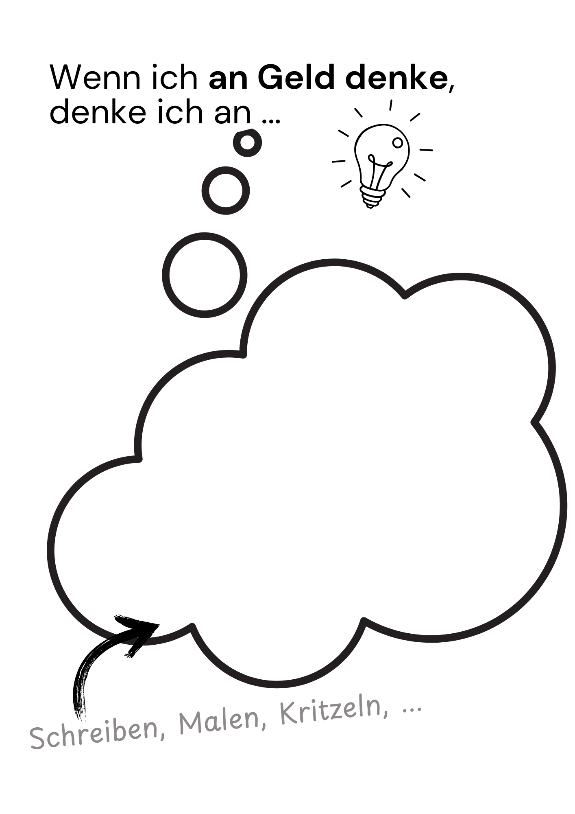
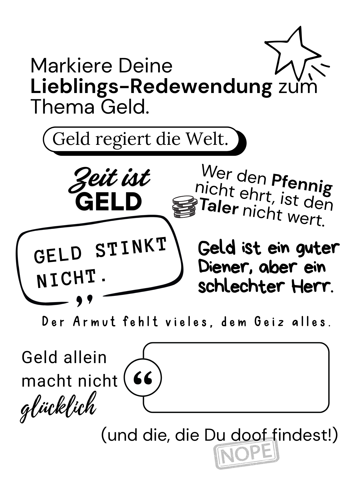
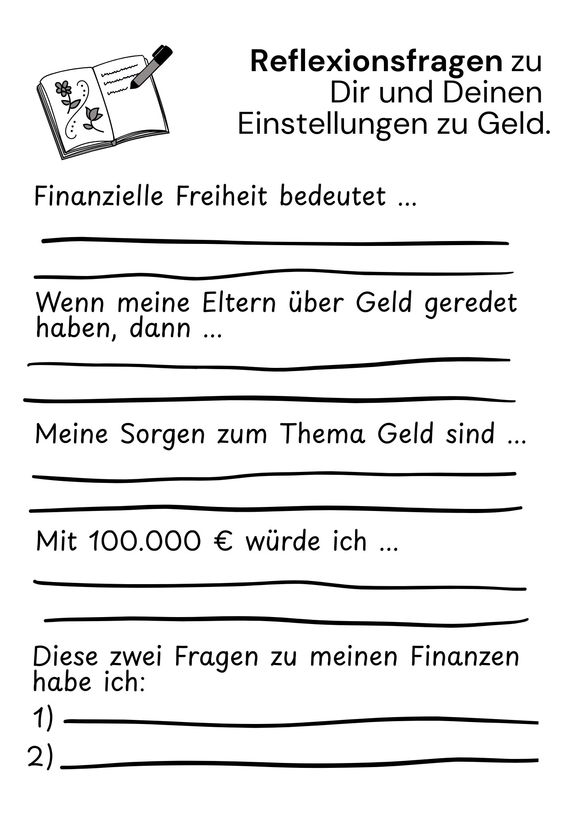
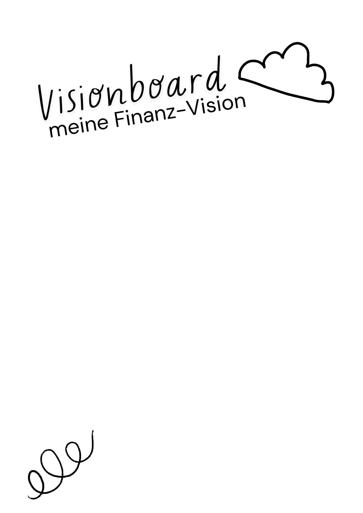
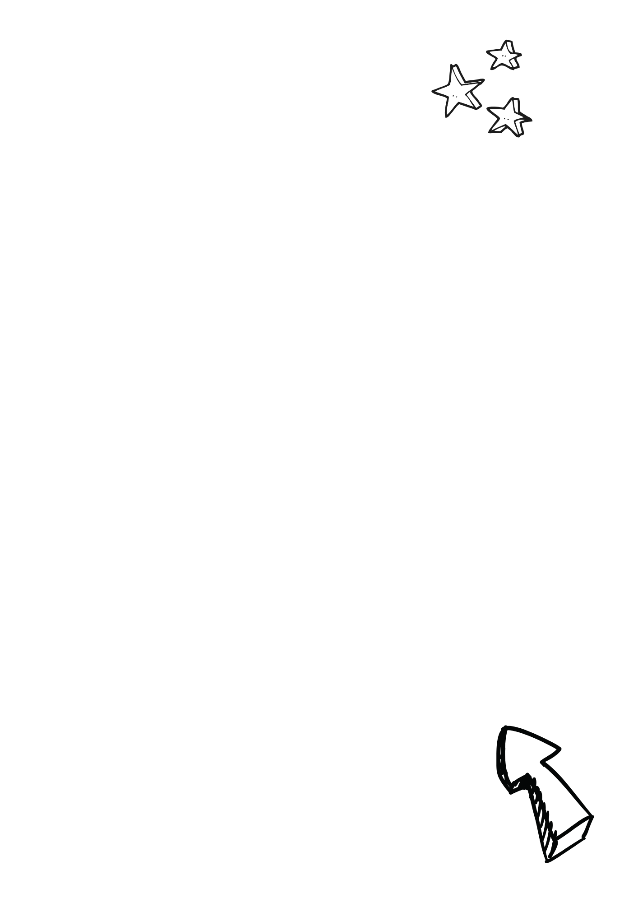

DRUCKVERSION
Du magst Dein Zine lieber in Papierform gestalten? Klicke auf „Jetzt drucken“. Prüfe die Druckeinstellungen (A4, Querformat, 100 % Skalierung, keine Ränder, Hintergrundgrafiken aktivieren). Drucke Dein Zine – und bastle los. Eine Faltanleitung findest Du hier.





